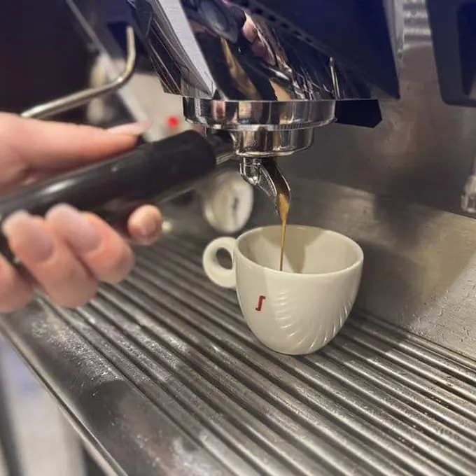
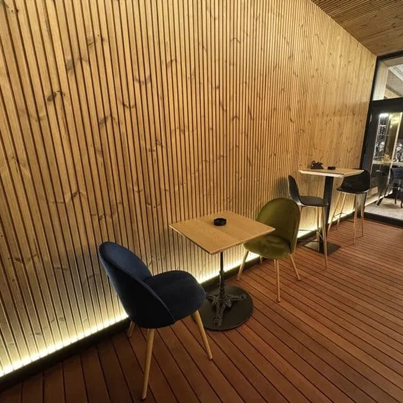

Revine pentru cappuccino, croissante și mojito fără alcool. Muzica îi face vizitele mai plăcute.
Ionela N. · Google Maps
01 Povestea
Am pornit
de la lemn.
Înainte să fie cafenea, CAF a fost un atelier. La ArtLegno Porte&Scale se fac uși, scări și parchet, așa că, atunci când am deschis prima cafenea în Botoșani, am lucrat-o cu mâinile noastre.
La Dorohoi am ajuns pe 7 martie 2025. Barul, mesele și pereții au ieșit tot din atelier. Dacă te uiți de aproape, se vede în fibră.
Vezi lemnul de aproape

02 Atelierul
Fiecare masă
are o poveste.
Barul, mesele și placarea pereților le-am făcut în același atelier. Am lăsat lemnul la vedere, pentru că ne place cum arată și cum se simte sub mână.



- Lucrat în atelierul nostru
- Lemn masiv
- Gândit detaliu cu detaliu
03 Meniul
Ce bem azi?
Meniul de aici e orientativ. Prețurile exacte le afli la bar.
04 Păreri
Ce spun oaspeții.
A apreciat cafeaua aromată și personalul amabil. Recomandă locul pentru o pauză sau pentru cafeaua de dimineață.
Laura C. · Google MapsA remarcat atmosfera primitoare, atenția la detalii și felul în care sunt prezentate produsele.
Luci P. · Google MapsAm rezumat câteva recenzii de pe Google Maps. Le găsești întregi la link.
Toate recenziile pe Google05 Unde ne găsești
Ne vedem la CAF.
Dorohoi
- Adresă
- Bulevardul Victoriei, DorohoiVizavi de Penny
- Program
- Zilnic, 07:00–22:00
- Telefon
- +40 756 764 805
Botoșani
- Adresă
- Calea Națională nr. 61, Botoșani
- Program
- Program [DE COMPLETAT]
- Telefon
- Telefon [DE COMPLETAT]